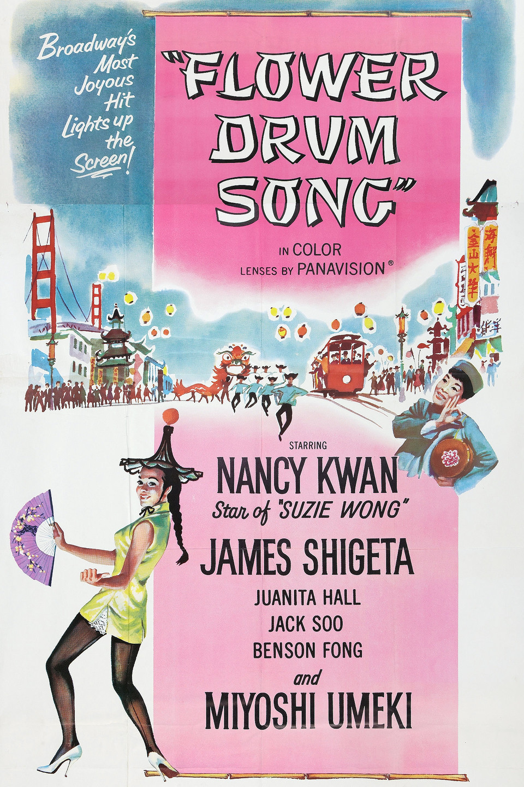

Flower Drum Song
34th Academy Awards
(Oscars 1962)
5 Nominations, 0 Awards
| Nominations | ||
|---|---|---|
| Category | Nominees | Result |
| Cinematography (Color) | Russell Metty | Nominated |
| Art Direction (Color) | Alexander Golitzen, Howard Bristol, and Joseph Wright | Nominated |
| Costume Design (Color) | Irene Sharaff | Nominated |
| Sound | Waldon O. Watson | Nominated |
| Music (Scoring of a Musical Picture) | Alfred Newman and Ken Darby | Nominated |